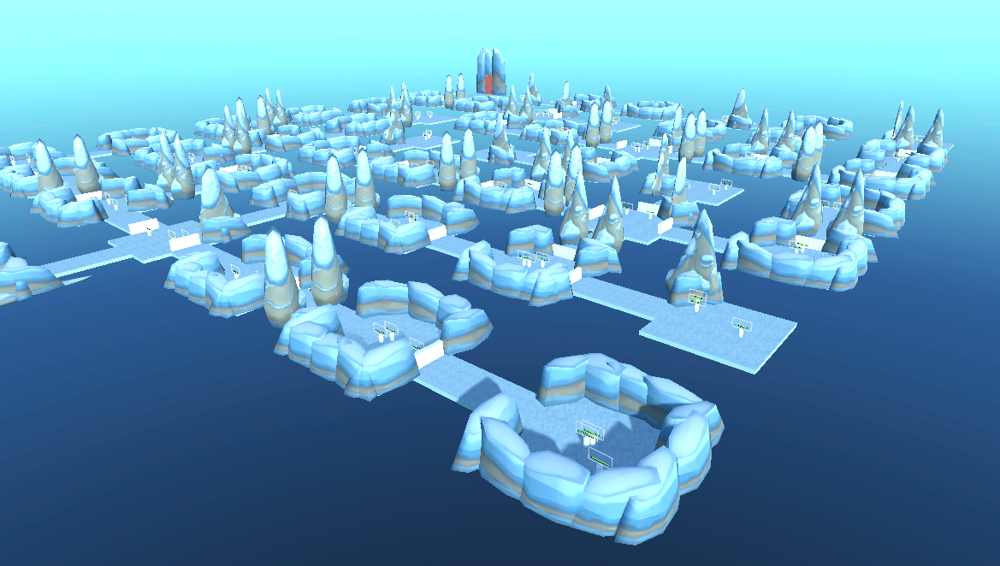
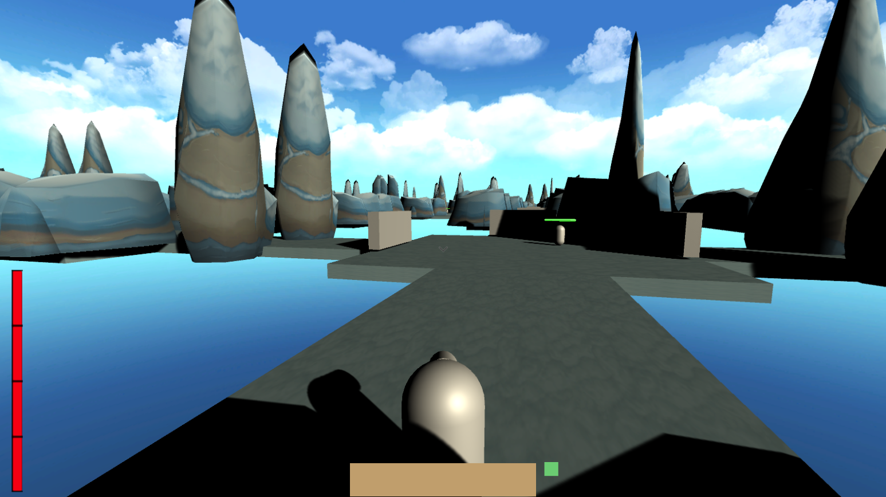
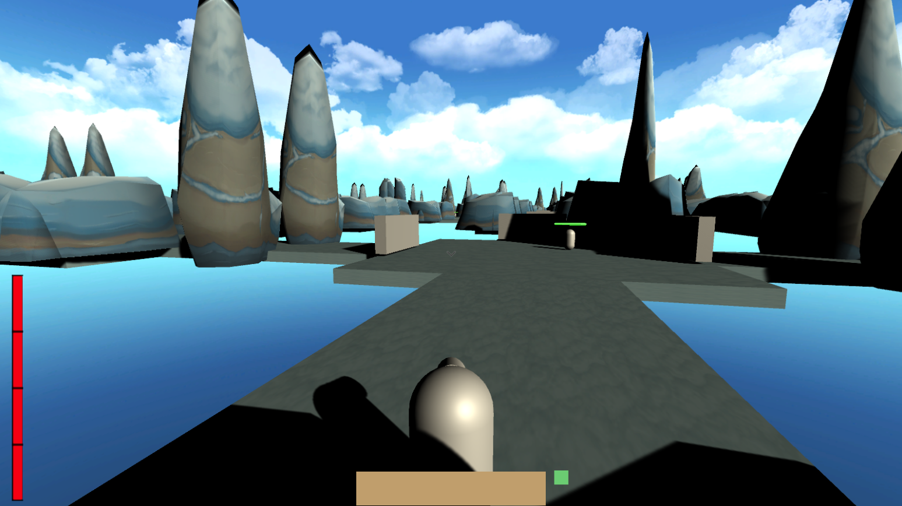
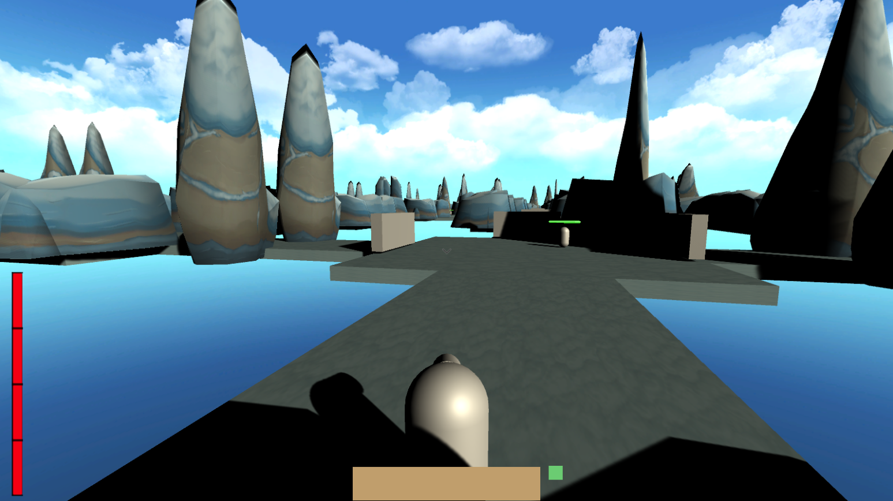

Dungeon Crawler Rogue-like Personal Project
During a summer project, I developed a roguelike dungeon-crawler in Unity. The game features a dynamic inventory system, unique combat mechanics, and procedural dungeon generation. While the project is clearly unfinished, it taught me a lot of new skills that I put towards future projects.
Key Features
- Dynamic Inventory & Items: Created a robust inventory system that supports drag-and-drop management and item stacking, including handling all edge cases like stack overflows. Items are generated from scriptable objects, with randomized stat modifiers applied at spawn to create unique loot. Equippable weapons have distinct, assignable attack patterns that scale with the item's final damage and speed stats.
- Segmented Health & Combat: To create more strategic gameplay, I implemented a non-traditional , segmented health bar. Healing only restores the current segment, not the full bar, which opens the door for interesting other mechanics. The system includes expandable enemy types with unique animated attack patterns.
- Procedural Dungeon Generation: The dungeon layout is a randomized, loop-free maze generated using a modified version of Prim's algorithm. Rooms are placed dynamically from a set of prefabs that are rotated to fit the required entrance configurations. Enemies spawn in each room, and the boss room is strategically placed at the furthest point from the start to create a final challenge.
github repository <- Repository

 



